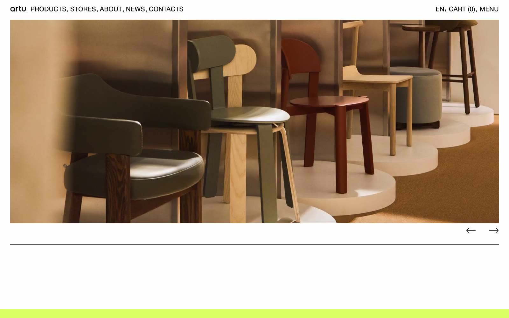

ARTU 的 Design.md 主题展示，围绕电商零售、浅色界面、消费品牌、品牌展示组织页面。
Explore ARTU's light E-commerce design system: Canvas White #ffffff, Obsidian Ink #000000 colors, Helvetica Neue Pro typography, and DESIGN.md for AI agents.

#d7ff66: #d7ff66#000000: #000000#ffffff: #ffffff#ff1313: #ff1313#f6f6f6: #f6f6f6#2e2e20: #2e2e20#c9c9c9: #c9c9c9#321929: #321929#e0dddf: #e0dddf#808080: #808080#1d1d1f: #1d1d1f#24241f: #24241fdisplay: Helvetica Neue Probody: Helvetica Neuemono: ui-monospacehints: Helvetica Neue Pro,Helvetica Neue,ui-monospace